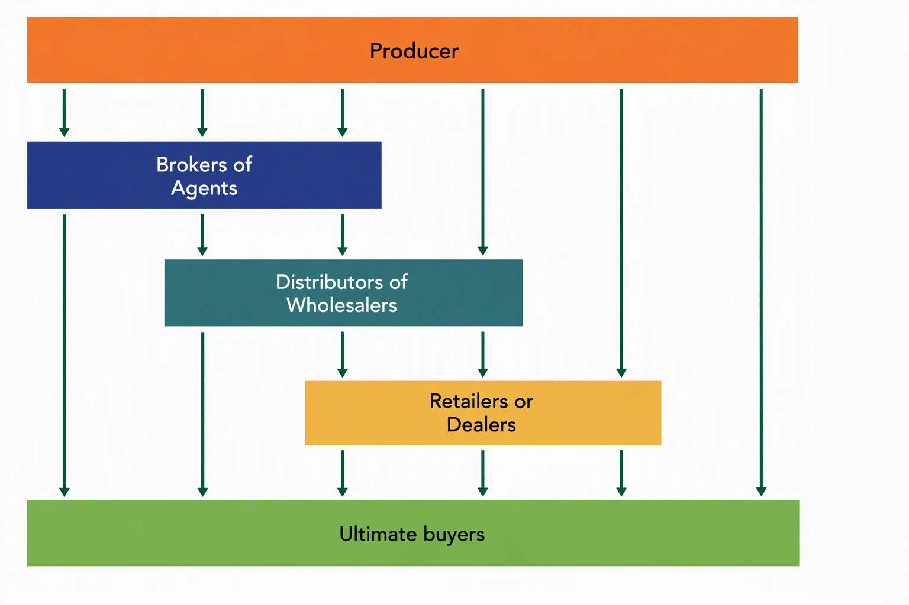
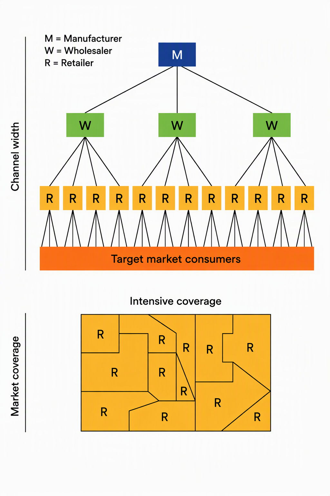
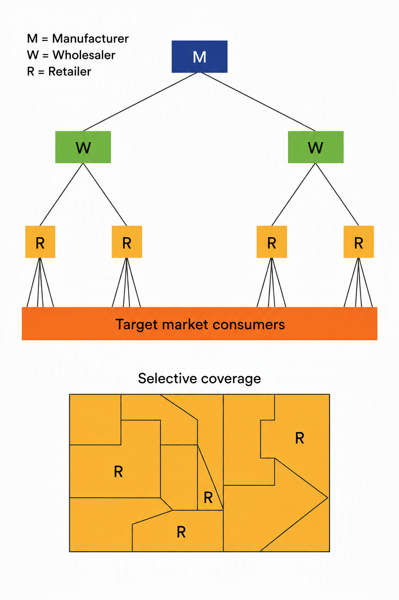
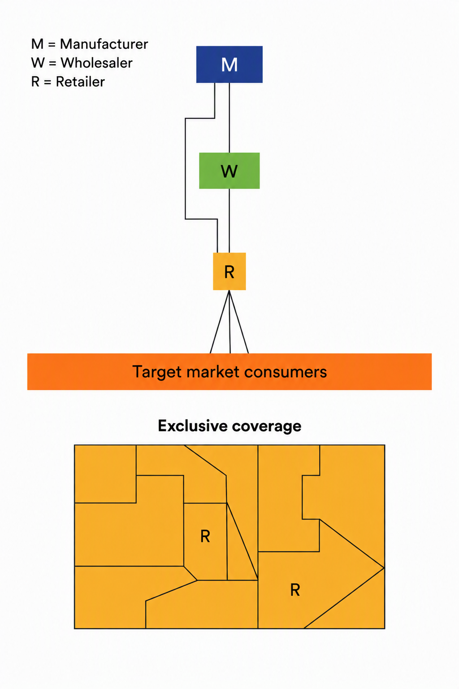

Traditional marketing channel decisions might look like this as goods or services move to the consumers via simple intermediaries.

Traditional marketing channel decisions might look like this as goods or services move to the consumers via simple intermediaries.

For the electronics sector, sales channels might see products and services move from the producer to the customer like this.

As illustrated here, intensive distribution in sales involves maximizing product availability by partnering with numerous channels and outlets in a given market. This strategy aims to saturate the market and make the product easily accessible to a wide audience and is particularly suitable for high-demand, commonly purchased items.

Selective distribution takes a more controlled approach by strategically choosing specific channels for product distribution. Outlets are carefully selected based on factors such as brand image, target audience, and product characteristics. Again, AI can analyze vast amounts of data to identify the most effective channels, predict consumer preferences, and optimize inventory management. This improves efficiency and tailors distribution efforts to maximize the impact on sales and customer satisfaction.

Exclusive distribution focuses the number of outlets further to a carefully chosen network. AI contributes by identifying optimal partners, fine-tuning product placement, and enhancing overall strategy. By incorporating AI into exclusive distribution models, companies can ensure a more refined and targeted approach, ultimately elevating the exclusivity and effectiveness of their distribution strategy.